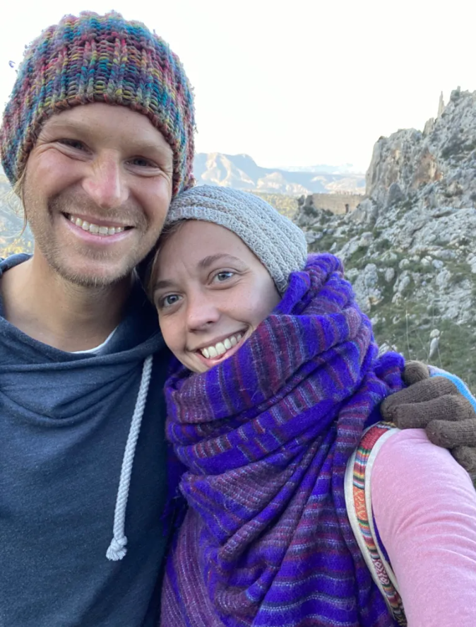
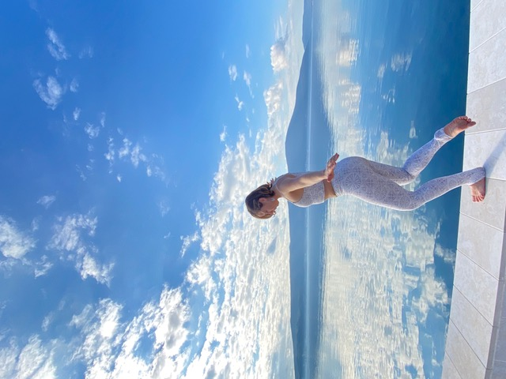
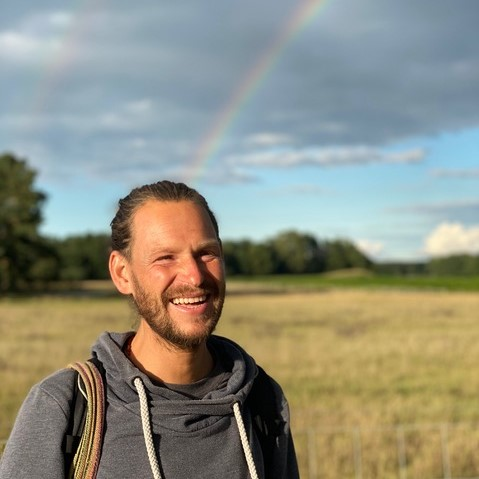

The Intimacy Project is a collaboration between Ana Eveleigh and David Hirtenstein.
We have created a unique way of working to help individuals create their own personal life support system, maintained by a daily yoga practice that brings harmony and balance to their lives.


Through 1:1 support, we are there with you.
Drawing upon our own experiences and trainings in yoga, pranayama and breath work, meditation, Qi-Gong, energy work, nutrition and Ayurvedic medicine, we look at how each individual can implement positive change in a practical and realistic way.
We all want to live a balanced, harmonious and caring life, that's good for ourselves, and good for others.
But let's face it, life happens. Busy work schedules, the needs of others. Relationships in all their beautiful (and sometimes unbeautiful) details.
It's so easy to talk, listen and agree. However, it's a whole other matter to actually implement and make a lasting change that moves us beyond the habitual patterns that constantly cause distress and disharmony in our lives.
The fact is, we are all here, living and breathing together, and we are born to embrace our lives, and express the beautiful uniqueness that is within each of us.
Habitual patterns (samskara), labels, fear, judgement and criticism: they are all just symptoms of learned behaviour that we have developed in our lives.
But it doesn't have to be that way. That's why we created The Intimacy Project
"Breathe In; Inspire Yourself"
Click the pictures below to learn more about Ana and David:


About Ana
When you find yourself in a state of imbalance, it is coming back to simplicity which allows you to find balance once again. This is the essence of what Ana shares and the foundation of her Life.
Through her unique combination of Yoga Asana, Pranayama, QiGong and intuitive movement, Ana guides you through your own practice, creating space for you to breathe in your own body, and move in your own way to bring all the energies into balance.
Ana's true passion is to share Dharma in a way that each individual can integrate into their lives, giving them the practical tools to live a more truthful and joyful life.
Ana's yoga journey began in 2016 after a near death experience in New Zealand. This was the spark of change that lead her to experience her first yoga class. Since then, she has been traveling and experiencing different teachings in Australia, India and the UK, diving deep into Hatha, Ashtanga, Yin, Pranayama, meditation, Qi-Gong, nature, life and love.
Her down to earth, real-life application makes anything seem possible. Her nature is intuitive, creative, joyful and she will ensure you receive exactly what you need. The unachievable, is achievable. You just have to believe.
About David
In 2013 David quit his job and decided to walk from Europe to India, following the path of the heart. He is dedicated to the practical application of spiritual teachings in life.
As a foundation, he follows the principles of Raja Yoga, and believes each of us has the capacity to go beyond habitual patterns and ways of thinking to express the unique beauty that is inside, allowing us to live in peace, harmony and love, with ourselves, each other and the world we all share.
After studying with many teachers from different traditions, his own daily practice is a combination of breath led intuitive movement, balanced with stillness. He takes great joy in supporting others towards authentic self expression.
By integrating a nourishing daily practice into our lives, we listen to the silent song of the heart, and open more fully to love. Nature takes care of everything else.
After meeting and working with people all across the world, we recognised many similarities that human beings across the planet can agree on:
A balanced, healthy & natural life is a good thing.
Work/life balance is a difficult thing to achieve.
Most of us have a real need to build confidence and trust, in ourselves and the world around us.
Stress and worry are a recurring theme, whether in fast-paced office jobs, parents balancing work & life, restaurant & trade workers, or consider ourselves to be alternative and living in a different way to the societal norm.
We all want to increase energy & focus in our lives.
We all want to create a caring and supportive working and living environment.
Many people are seeking ways to relieve physical pain, and covering it up is not helping. We need to go to the root cause.
We all want to love, and be loved in return. Whether that is same sex, different sex, or through a beautiful and deep relationship with ourselves, animals and nature, it's the same for us all.
We created The Intimacy Project to help individuals develop a healthy, harmonious and caring life.